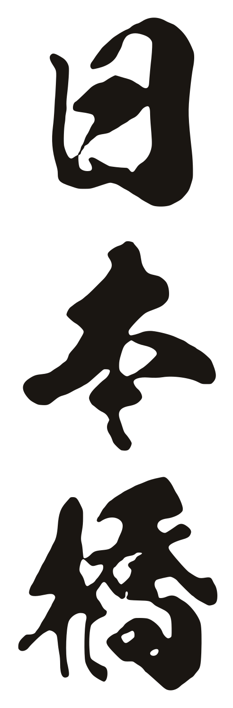

ご存じですか？
さつまいもは「薩摩が最初」…ではありません。
日本最古のさつまいも伝来地は、宮古島です。

芋が日本に伝わった順番
※宮古島と沖縄本島は、それぞれ中国から伝わったとされます。宮古島から本島へ伝わったという説もありますが、くわしくは分かっていません。
芋を伝えた人三度、海に流された人
長真氏旨屋（ちょうしんうじ しおく）
- 1594首里からの帰り道に漂流し、中国の福建へ。3年のあいだ芋の栽培を学ぶ。
- 1597芋かずら（芋の茎）を持って帰る途中、ふたたび漂流して九州へ。それでも島に帰り着き、芋を広める。
- 1632役人として最高位の「砂川親雲上（うるかぺーちん）」に。
- 1642三度目の漂流で八重山へ。病に倒れ、宮古島に戻ることなく生涯を終える。
島を救った芋「唐イモ」が、島の主食に
台風や干ばつで食べ物が足りなくなる年が多かった宮古島。過酷な土地でも丈夫に育つ芋は、またたく間に島の主食となり、人々を飢えから救いました。
- 今も旨屋は、宮古島・平良西仲宗根の「芋ヌ主御嶽（んぬしゅう うたき）」に祀られています。
- 〜1950毎年8月ごろ、島中の芋を持ち寄る豊年感謝祭「芋プゥイ」が開かれていました。